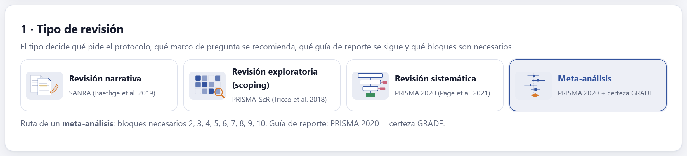
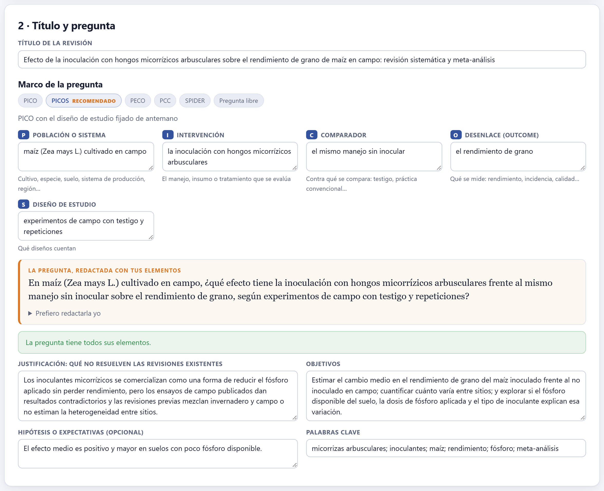
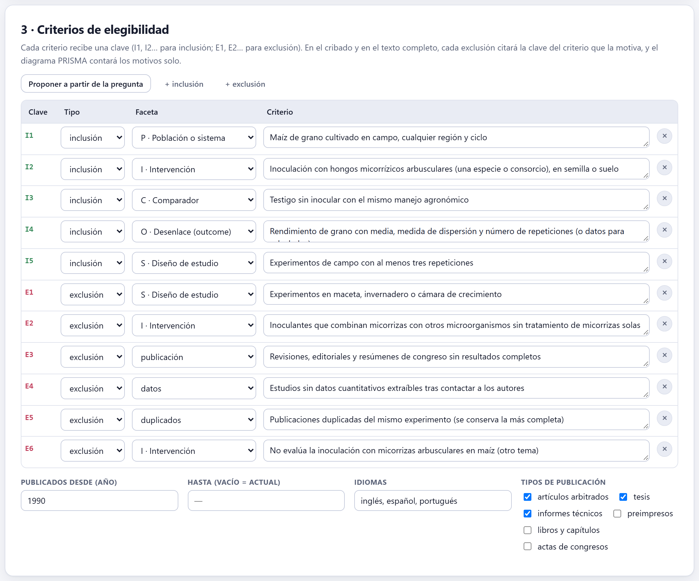
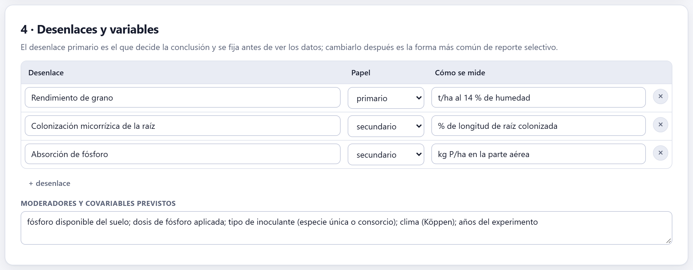
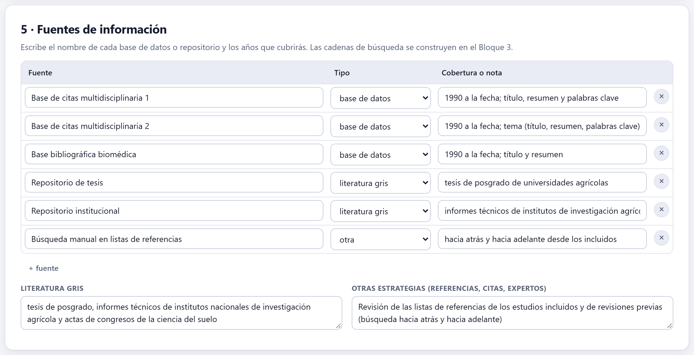
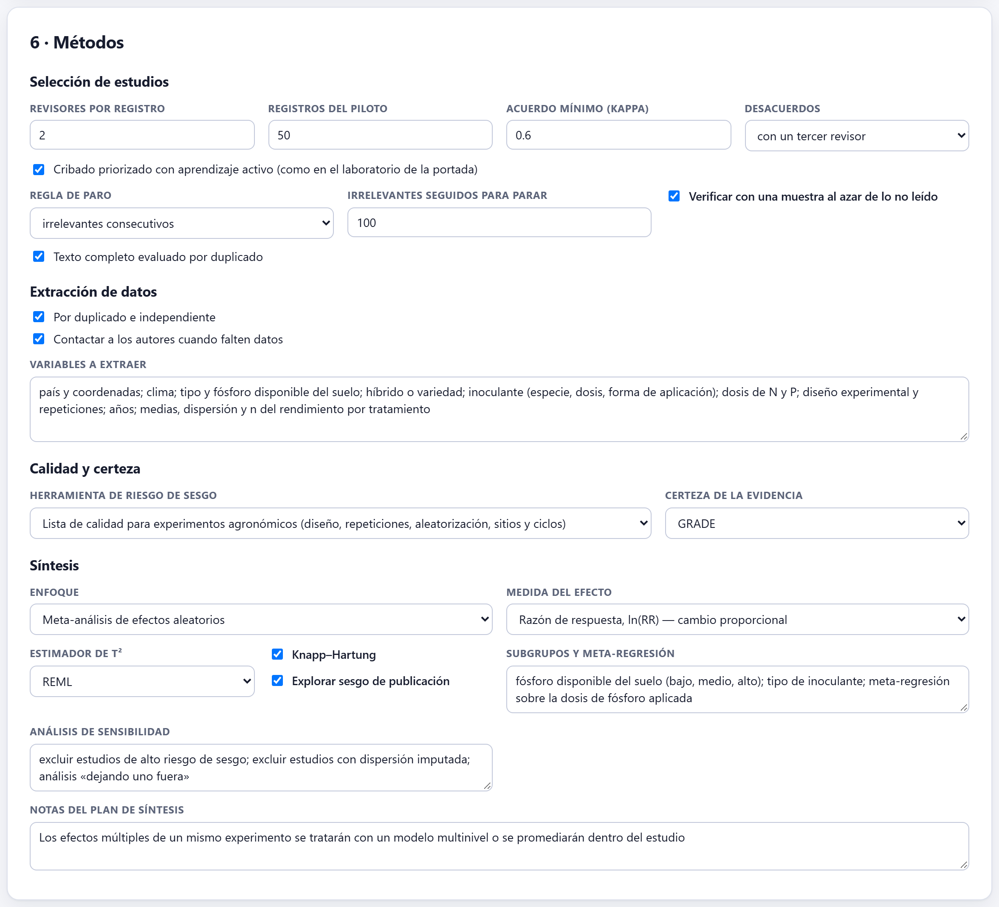
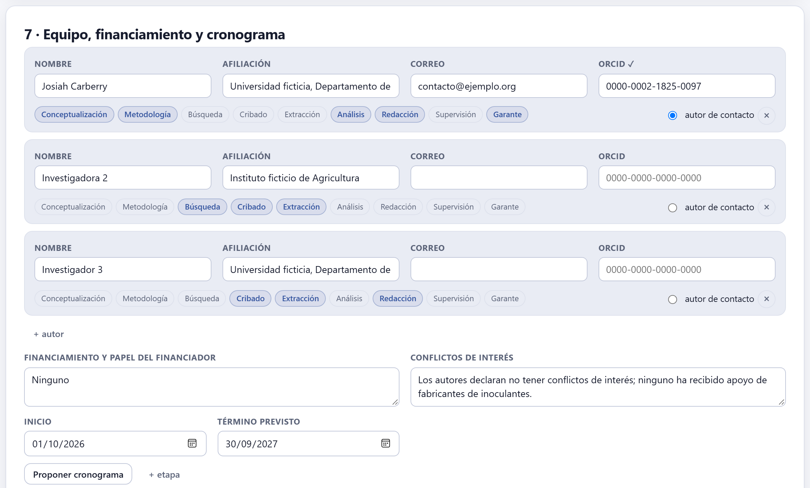
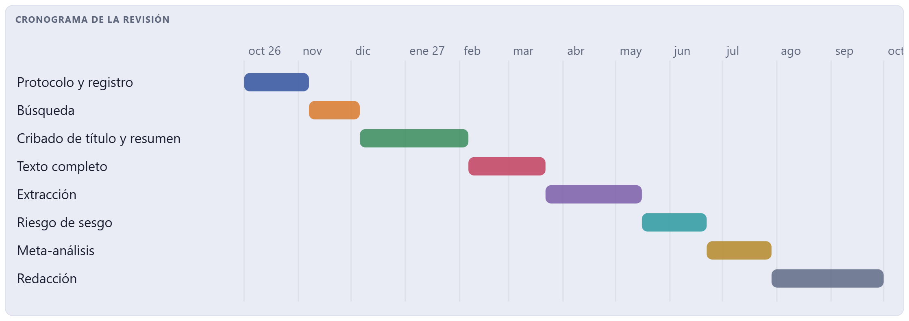
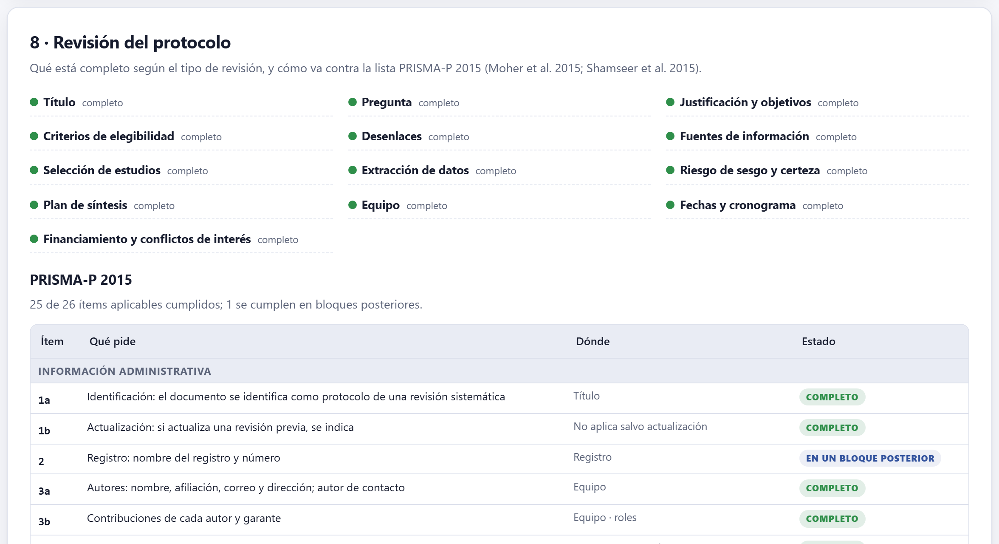
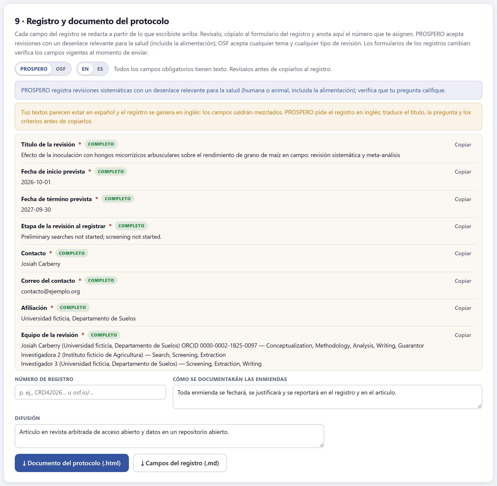

El protocolo fija la pregunta, los criterios, los desenlaces, las fuentes, los métodos y quién hace qué, antes de ver un solo resultado. Es lo que impide que la revisión se acomode a lo que encuentra. El bloque también guarda y abre el proyecto, revisa el protocolo contra la lista PRISMA-P, redacta los campos del registro en PROSPERO u OSF y descarga el documento del protocolo.
La primera tarjeta del bloque, Proyecto (figura I.2), maneja el proyecto entero, no solo el protocolo. Su barra de color mide qué tan completo está el protocolo —en el ejemplo, «100 % del protocolo · 13 secciones completas, 0 por revisar, 0 faltan»— y a la derecha dice cuándo se guardó por última vez en el navegador.
| Botón | Qué hace |
|---|---|
| Nuevo | Empieza un proyecto vacío del mismo tipo que el abierto. Pide confirmación, porque todo lo abierto se reemplaza: guárdalo antes. |
| Abrir archivo… | Abre un .reviewpro.json: el tuyo de otra sesión o el de un coautor. |
| ⤓ Guardar archivo | Descarga el proyecto completo con el título como nombre de archivo. |
| Ejemplo · Cargar ejemplo | Llena solo el protocolo con uno de tres ejemplos: Meta-análisis: micorrizas y maíz, Exploratoria: agroecología en café o Narrativa: micorrizas y fósforo. Sirven para ver un protocolo completo de cada tipo antes de escribir el tuyo. |
El archivo del proyecto es la forma de trabajar en equipo: quien escribe el protocolo lo guarda y lo comparte; quien criba abre esa copia. Las decisiones de cribado de cada revisor, en cambio, se intercambian con un archivo propio del Bloque 4, para que cada quien cribe a ciegas en su computadora (sección 4.5).

Este es el tipo que manda en todo el proyecto (sección 1.2). Cambiarlo más adelante es posible, pero tiene consecuencias: cambia el marco recomendado de la pregunta, la herramienta de sesgo por omisión, el enfoque de la síntesis, el esqueleto del manuscrito y la lista de reporte. Los datos que ya capturaste no se pierden.

El título debe decir qué tipo de revisión es («revisión sistemática y meta-análisis», «revisión exploratoria»): PRISMA 2020 lo pide en su primer punto, y el Bloque 9 lo comprueba. Luego se elige el marco de la pregunta; la app marca como recomendado el que corresponde al tipo.
| Marco | Elementos | Para qué |
|---|---|---|
| PICO | Población o sistema · Intervención · Comparador · Desenlace | Intervenciones y tratamientos: ¿funciona?, ¿cuánto? |
| PICOS | PICO + Diseño de estudio | PICO con el diseño fijado de antemano (recomendado para meta-análisis) |
| PECO | Población · Exposición · Comparador · Desenlace | Exposiciones que no se asignan: clima, contaminación, manejo observado |
| PCC | Población · Concepto · Contexto | Revisiones exploratorias: mapear conceptos en un contexto |
| SPIDER | Muestra · Fenómeno de interés · Diseño · Evaluación · Tipo de investigación | Evidencia cualitativa o de métodos mixtos |
| Pregunta libre | Una sola pregunta escrita a mano | Revisiones narrativas |
Cada elemento trae un recordatorio de qué va ahí. Con ellos, la app redacta la pregunta en un recuadro; si prefieres escribirla tú, abre Prefiero redactarla yo y lo que escribas reemplaza a la redactada. Debajo, un aviso comprueba la pregunta: «La pregunta tiene todos sus elementos», o bien qué falta o qué no cuadra con el tipo.
| Si una sistemática o un meta-análisis usa pregunta libre o PCC | entonces la app pide una pregunta focalizada: PICO, PICOS, PECO o SPIDER. |
| Si un meta-análisis no tiene comparador | entonces no hay efecto que combinar: define contra qué se mide. |
| Si un meta-análisis usa SPIDER | entonces la app advierte que SPIDER es para evidencia cualitativa. |
| Si una exploratoria usa PICO | entonces funciona si ya sabes qué intervención mapear; lo usual es PCC. |
La justificación responde qué no resuelven las revisiones existentes; los objetivos, qué se estimará o se mapeará; la hipótesis es opcional; las palabras clave se separan con punto y coma. Los elementos de la pregunta —no las palabras clave— siembran los bloques de conceptos de la búsqueda (sección 3.1).

La clave no es un adorno: en el cribado y en el texto completo, cada exclusión se registra con la clave del criterio que la motiva, y el diagrama PRISMA cuenta los motivos solo. Por eso conviene que cada criterio de exclusión sea uno solo y verificable: «experimentos en maceta, invernadero o cámara de crecimiento» se decide leyendo; «estudios de baja calidad» no.
| Proponer a partir de la pregunta | Escribe un criterio de inclusión por cada elemento de la pregunta, más exclusiones habituales. Es un punto de partida: edítalos. |
| + inclusión · + exclusión | Agregan un criterio; la ✕ lo quita y las claves se renumeran. |
| Faceta | El elemento de la pregunta (P, I, C, O, S…) o una categoría general: publicación, datos, duplicados. |
| Años, idiomas, tipos de publicación | El periodo (el año final vacío significa «hasta hoy»), los idiomas aceptados y qué tipos cuentan: artículos arbitrados, tesis, informes técnicos, preimpresos, libros y capítulos, actas de congresos. |
Dejar fuera tesis, informes técnicos y resúmenes de congreso excluye justo la literatura donde se esconden los resultados nulos, y aumenta el riesgo de sesgo de publicación que el Bloque 8 intentará medir. Si decides excluirlos, escríbelo y justifícalo; si los incluyes, la búsqueda del Bloque 3 tendrá que ir a buscarlos.

Cada desenlace lleva su nombre, su papel —primario o secundario— y cómo se mide. El primario decide la conclusión y se fija antes de ver los datos; cambiarlo después es la forma más común de reporte selectivo. Los nombres que escribas aquí vuelven en el Bloque 6 (a qué desenlace pertenece cada efecto) y en el Bloque 7 (una fila de GRADE por desenlace). Los moderadores son las variables con las que piensas explicar la heterogeneidad; declararlos aquí es lo que separa una exploración de una pesca de resultados (sección 8.3).

Las fuentes se listan por nombre, con su tipo y los años que cubrirás; el tipo decide en qué columna del diagrama PRISMA caen sus registros (bases de datos y registros, u otros métodos). Para eso, el nombre que le des a cada archivo importado en el Bloque 3 debe ser el mismo que el de su fuente aquí; un archivo cuya fuente no aparece en esta lista se cuenta como base de datos. Los campos de literatura gris y de otras estrategias (listas de referencias, citas hacia adelante, consulta a expertos) completan el punto 7 de PRISMA-P. Las cadenas se construyen en el Bloque 3.

| Apartado | Qué se declara | Lo usa |
|---|---|---|
| Selección de estudios | Revisores por registro, tamaño del piloto, acuerdo mínimo (kappa), cómo se resuelven los desacuerdos (por discusión o con un tercer revisor), si se criba con priorización y con qué regla de paro, si se verifica con una muestra de lo no leído, y si el texto completo se evalúa por duplicado. | Bloques 4 y 5 |
| Extracción de datos | Si es por duplicado e independiente, si se contactará a los autores cuando falten datos, y las variables a extraer. | Bloque 6 |
| Calidad y certeza | La herramienta de riesgo de sesgo —la lista de calidad para experimentos agronómicos, RoB 2, ROBINS-I, Newcastle–Ottawa, una lista para estudios cualitativos o ninguna— y si la certeza se calificará con GRADE. | Bloque 7 |
| Síntesis | El enfoque (temático, tablas de caracterización, SWiM o meta-análisis), la medida del efecto, el estimador de τ², Knapp–Hartung, si se explora el sesgo de publicación, los subgrupos, la sensibilidad y notas. | Bloques 6 y 8 |
| Medida del efecto | Cuándo |
|---|---|
| Razón de respuesta, ln(RR) | Cambio proporcional entre medias de la misma variable positiva (rendimiento, biomasa): la de uso más común en agronomía y ecología (Hedges et al. 1999). |
| Diferencia de medias estandarizada (g de Hedges) | Medias en escalas distintas entre estudios. |
| Diferencia de medias | Todos los estudios en la misma unidad. |
| Razón de riesgos, razón de momios, diferencia de riesgos | Conteos: plantas enfermas y sanas, parcelas con y sin daño. |
| Correlación (z de Fisher) | Asociaciones entre dos variables continuas. |

Cada autor lleva nombre, afiliación, correo y ORCID; la app valida el dígito verificador del ORCID y pone una ✓ cuando es correcto. Los roles —conceptualización, metodología, búsqueda, cribado, extracción, análisis, redacción, supervisión y garante— se marcan con un clic, y uno de los autores es el de contacto. El financiamiento y los conflictos de interés se declaran siempre, aunque sea «ninguno»: PRISMA 2020 los pide y los datos vivos {{funding}} y {{coi}} del Bloque 9 los copian al manuscrito.
Con las fechas de inicio y término, Proponer cronograma reparte el tiempo en etapas con las proporciones típicas del tipo de revisión —en una sistemática, por ejemplo, el cribado de título y resumen se lleva cerca de una sexta parte— y dibuja el diagrama de barras. Las etapas y sus fechas se editan a mano.


La tarjeta junta dos revisiones. Arriba, cada sección que el tipo de revisión pide, con su estado —completo, por revisar o falta— y, cuando algo falta, qué hacer («Declara ambos, aunque sea "ninguno"», «Explica por qué hace falta esta revisión»). Abajo, la lista PRISMA-P 2015 (Moher et al. 2015; Shamseer et al. 2015), punto por punto: qué pide, en qué lugar del protocolo se cumple y su estado. Algunos puntos se cumplen en bloques posteriores —el número de registro, por ejemplo, solo existe después de registrar— y se marcan así, no como faltantes.

Cada campo del registro se redacta a partir de lo que escribiste arriba, con un botón Copiar para pegarlo en el formulario del registro. Se elige el registro —PROSPERO u OSF— y el idioma de los campos. La app avisa dos cosas: el alcance de cada registro y si tus textos están en otro idioma que el del registro.
| Si la revisión es exploratoria o narrativa | entonces OSF: PROSPERO no las registra. |
| Si es sistemática con un desenlace relevante para la salud (humana o animal, incluida la alimentación) | entonces PROSPERO es una opción; verifica que tu pregunta califique. |
| Si es sistemática sobre un tema agronómico o ambiental sin desenlace de salud | entonces OSF, que registra cualquier tipo de revisión y de tema. |
| Si el registro pide inglés y tu protocolo está en español | entonces traduce el título, la pregunta y los criterios antes de copiarlos; la app no traduce tus textos. |
Los formularios de los registros cambian: verifica los campos vigentes al momento de enviar.
Al registrar, anota el número de registro (por ejemplo, CRD42026… u osf.io/…): con él se cumple el punto 2 de PRISMA-P, el 24a de PRISMA 2020 y el dato vivo {{reg}} del manuscrito. Las enmiendas dicen cómo se documentarán los cambios; la difusión, dónde se publicará. ⤓ Documento del protocolo (.html) descarga el protocolo completo, listo para imprimir o adjuntar; ⤓ Campos del registro (.md), los campos en texto.
Los del marco de la pregunta (sección 2.3), los de cada sección incompleta (2.8) y los del registro (2.9). Ninguno te impide avanzar: el protocolo se puede enmendar, y una revisión real lo hace. Lo que importa es que cada cambio quede fechado y justificado en Enmiendas y se reporte en el artículo (punto 24c de PRISMA 2020).